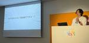

NHN テコラス Tech Blog | AWS、機械学習、IoTなどの技術ブログ
https://techblog.nhn-techorus.com
NHN テコラス株式会社が、AWSを中心としたクラウドインフラやオンプレミス、ビッグデータ、機械学習などの技術ネタを中心にご紹介するブログです。 現場のエンジニアやデータサイエンティストが同じ仕事に携わる方にとって便利なものや知りたいであろう情報を提供することを目的としています
フィード
企業内の各事業部門における生成AIの活用方法 1
1
NHN テコラス Tech Blog | AWS、機械学習、IoTなどの技術ブログ
本記事では、企業の事業部と、各事業部で生成AIをどのように活用できるのか、活用するためにどのようなツールやソリューションを導入するとそれで何ができるのかを解説します。 各事業部での生成AI活用事例については、国内外のスタートアップ企業のソリ...続きを読む企業内の各事業部門における生成AIの活用方法 first appeared on NHN テコラス Tech Blog | AWS、機械学習、IoTなどの技術ブログ.
10時間前
【Google Cloud Next Tokyo ’24】スキルバッジ：Vertex AI のプロンプト デザイン入門：ラーニング ラボ(D2-LL-01) 1
NHN テコラス Tech Blog | AWS、機械学習、IoTなどの技術ブログ
はじめに こんにちは。Kooです。 8月2日にパシフィコ横浜ノースで開催されたGoogle Cloud Next Tokyo`24へ現地参加してきました。 今回の記事では、「スキルバッジ：Vertex AI のプロンプトデザイン入門」という...続きを読む【Google Cloud Next Tokyo ’24】スキルバッジ：Vertex AI のプロンプト デザイン入門：ラーニング ラボ(D2-LL-01) first appeared on NHN テコラス Tech Blog | AWS、機械学習、IoTなどの技術ブログ.
12時間前
【やってみた】Cloud SQL for MySQLとLangChainを活用した Retrieval Augmented Generation を使用して生成 AI アプリケーションを作成する方法を学ぶ
NHN テコラス Tech Blog | AWS、機械学習、IoTなどの技術ブログ
本記事は、こちらで紹介されている内容をもとに解説を加えたものです。 概要 Cloud SQL for MySQLとLangChainを活用した Retrieval Augmented Generation を使用して、強力でインタラクティブ...続きを読む【やってみた】Cloud SQL for MySQLとLangChainを活用した Retrieval Augmented Generation を使用して生成 AI アプリケーションを作成する方法を学ぶ first appeared on NHN テコラス Tech Blog | AWS、機械学習、IoTなどの技術ブログ.
14時間前
【Google Cloud Next Tokyo ’24】マルチモーダル生成 AI Gemini による映像解析 How-To（D2-AIML-07） 1
NHN テコラス Tech Blog | AWS、機械学習、IoTなどの技術ブログ
はじめに こんにちは、フクナガです。 8月1日、2日にパシフィコ横浜ノースで開催されたGoogle Cloud Next Tokyo ’24に現地参加してきました！ 今回の記事では、「マルチモーダル生成 AI Gemini によ...続きを読む【Google Cloud Next Tokyo ’24】マルチモーダル生成 AI Gemini による映像解析 How-To（D2-AIML-07） first appeared on NHN テコラス Tech Blog | AWS、機械学習、IoTなどの技術ブログ.
2日前
【Google Cloud Next Tokyo ’24】 Platform Engineering入門 : Golden Path の構築と活用(D1-APP-01)
NHN テコラス Tech Blog | AWS、機械学習、IoTなどの技術ブログ
はじめに お久しぶりです、reonoです！ Google Cloud Next Tokyo ’24に現地参加してきました。 体験型のブースや興味深いセッションがあり楽しめました！ 今回は視聴セッション「Platform Engi...続きを読む【Google Cloud Next Tokyo ’24】 Platform Engineering入門 : Golden Path の構築と活用(D1-APP-01) first appeared on NHN テコラス Tech Blog | AWS、機械学習、IoTなどの技術ブログ.
3日前

【Google Cloud Next Tokyo ’24】「Vertex AIの業務への活用・導入のポイント」というタイトルで登壇してきました！ 1
NHN テコラス Tech Blog | AWS、機械学習、IoTなどの技術ブログ
はじめに こんにちは、Shunです！ 2024年8月1日(木)、2日(金)に行われたGoogle Cloud Next Tokyo ’24 にて登壇する機会をいただいたので、その内容を記事にします！ Vertex AIの業務への活用・導入の...続きを読む【Google Cloud Next Tokyo ’24】「Vertex AIの業務への活用・導入のポイント」というタイトルで登壇してきました！ first appeared on NHN テコラス Tech Blog | AWS、機械学習、IoTなどの技術ブログ.
3日前
【Google Cloud Next Tokyo ’24】DAY 2 基調講演の発表内容を1分で読める記事にまとめてみた
NHN テコラス Tech Blog | AWS、機械学習、IoTなどの技術ブログ
はじめに こんにちは、Shunです！ 2024年8月1日(木)、2日(金)に行われたGoogle Cloud Next Tokyo ’24 へ参加し、DAY 2 基調講演を聴講してきました！ 本記事は、発表内容を大きなアップデートや重要なこ...続きを読む【Google Cloud Next Tokyo ’24】DAY 2 基調講演の発表内容を1分で読める記事にまとめてみた first appeared on NHN テコラス Tech Blog | AWS、機械学習、IoTなどの技術ブログ.
3日前
【Google Cloud Next Tokyo ’24】DAY 1 基調講演の発表内容を1分で読める記事にまとめてみた
NHN テコラス Tech Blog | AWS、機械学習、IoTなどの技術ブログ
はじめに こんにちは、Shunです！ 2024年8月1日(木)、2日(金)に行われたGoogle Cloud Next Tokyo ’24 へ参加し、DAY 1 基調講演を聴講してきました！ 本記事では、発表内容を大きなアップデートや重要な...続きを読む【Google Cloud Next Tokyo ’24】DAY 1 基調講演の発表内容を1分で読める記事にまとめてみた first appeared on NHN テコラス Tech Blog | AWS、機械学習、IoTなどの技術ブログ.
4日前
【Google Cloud Next Tokyo ’24】日本最大のGoogle Cloud イベントに行ってきた！
NHN テコラス Tech Blog | AWS、機械学習、IoTなどの技術ブログ
はじめに こんにちは、Shunです！ 2024年8月1日(木)、2日(金)に行われたGoogle Cloud Next Tokyo ’24 へ参加してきましたので、そのレポートや感想をご紹介します！ Google Cloud Next To...続きを読む【Google Cloud Next Tokyo ’24】日本最大のGoogle Cloud イベントに行ってきた！ first appeared on NHN テコラス Tech Blog | AWS、機械学習、IoTなどの技術ブログ.
4日前
【Google Cloud Next Tokyo ’24】現地参戦したので、写真付きで魅力を語ってみた
NHN テコラス Tech Blog | AWS、機械学習、IoTなどの技術ブログ
はじめに こんにちは、フクナガです。8月1日、2日にパシフィコ横浜で開催された Google Cloud Next Tokyo ’24 に現地参加してきました！ 最先端の Google Cloud の技術やアップデートを目当てに...続きを読む【Google Cloud Next Tokyo ’24】現地参戦したので、写真付きで魅力を語ってみた first appeared on NHN テコラス Tech Blog | AWS、機械学習、IoTなどの技術ブログ.
4日前